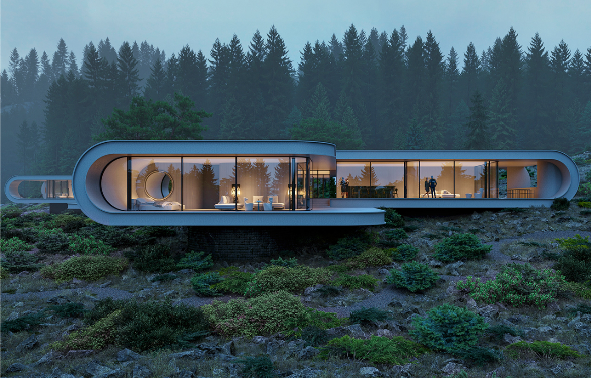
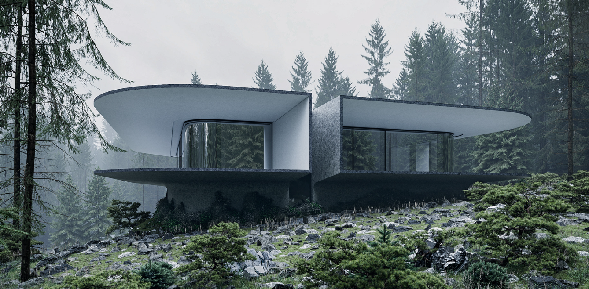
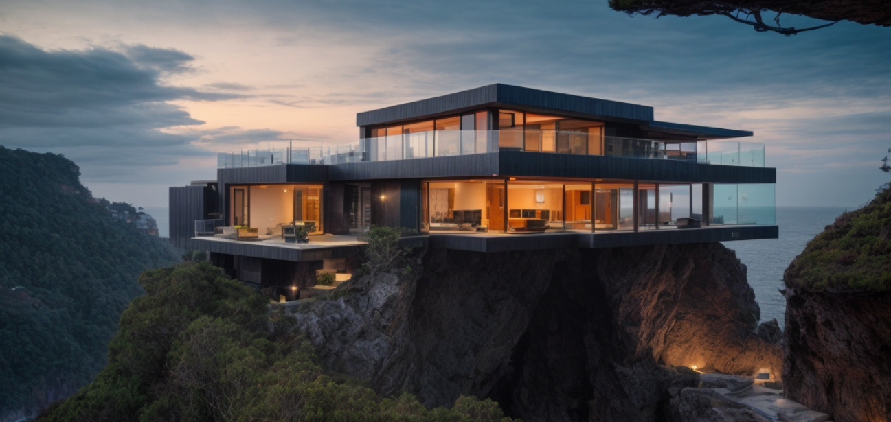
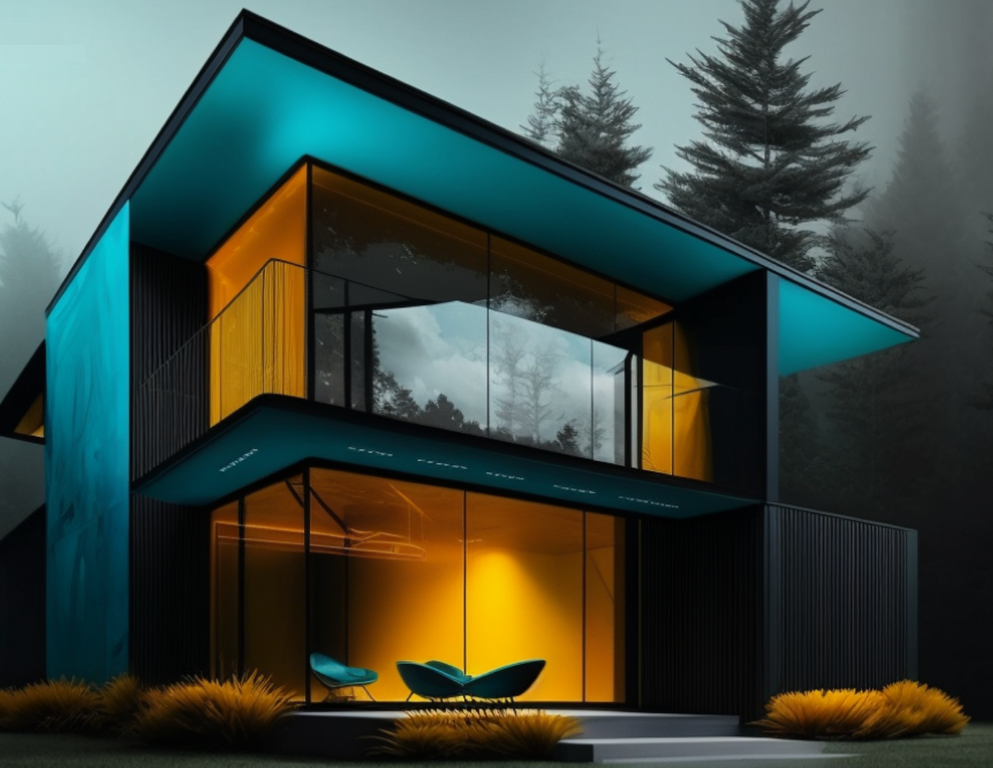

| Project | Preview | Description | Price |
|---|---|---|---|
| Arcadian Curve |  |
|
|
| Zenith Haven |  |
|
|
| Cliffside Lumina |  |
|
|
| Emerald Whisper |  |
|
Architecture Style: Modern, with a sleek, elongated form that blends into the natural landscape. Key Features: Panoramic windows for immersive forest views. Elevated structure to minimize environmental impact. Ambient interior lighting for evening allure.
Architecture Style: Avant-garde with bold, geometric lines and cantilevered elements. Key Features: Cantilevered roofs for dramatic overhangs. Expansive glass walls to connect interior with nature. Rugged concrete base blending with natural terrain.
Architecture Style: Contemporary with clean lines and an emphasis on horizontal planes. Key Features: Cliffside positioning for unobstructed sea views. Open-plan living spaces with seamless indoor-outdoor transitions. Minimalist aesthetic with strategic lighting for ambiance.
Architecture Style: Futuristic, with an emphasis on dynamic lighting and sleek forms. Key Features: Vibrant teal and amber exterior lighting for a distinctive night-time appearance. Large, frameless glass windows for extensive natural light during the day.